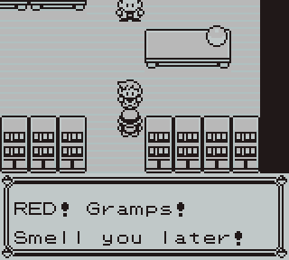
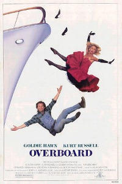

Welcome Friends!
Hi, I'm Ben and welcome to my space. I will share with you thoughts on my mind and my goals. I hope you enjoy my blog, enjoy it and teach me when I'm wrong, or enjoy it so much you start your own! [1]
Here's what you need to know:
- I'm an engineering student at the University of Cincinnati. I think it should be called engineering, not electrical engineering.
- I'm cutting-edge, because I texted via phone before people texted via phone (see below).
- I am on book 5 in A Song of Fire and Ice. If I ever write a feudal fantasy series, it will be titled Sandarac.
- One day, I hope to free the world from the limitations of current condiment dispensing technology.
- Dayton should really be generating hydroelectric power from its conservancy dams. What a waste.
What autobiographical info should you write about yourself on your own web space book? I have never been very good with electronic identity and communication.
For my 8th birthday Mom, Dad, and the grandparentals colluded to give me Pokemon Red with a Game Boy Color. In a fit of creativity, I named my character Ben. Even worse, my rival and starter were named "???" and "UNKNOWN" because I took naming prompts very literally. [2]
Somewhat later (UNKNOWN was definitely level 100) was a formative event for any teenage boy—calling your girlfriend while everyone in the kitchen eavesdrops. At that time Ohio provided a voice-text telephony service for the deaf. Basically I would speak to a grown man in Columbus and he was responsible for typing what I said, reading her words, and using a judging tone. This was also my first experience with semantic control words, preparing me well for LaTex and digital writing. </wait>, \holdon{}, </no wait, please delete that, yes wait \holdon{}>. <!--OH GOODNESS DON'T TYPE THAT!--> STOP! I would have definitely prefered morse code.
Even "Hello World" programs are difficult. My edition of K&R C uses that phrase. Has there been no creativity in computer introductions since then? Were those Alexa's first words? I tried to be creative with my AVR hello world ...but effort that definitely went overboard.
What is our online identity meant to be? When you don't know, plaster over it with humor. One thing is certain, our mental sanity needs to be considered.
Smell ya later,
Ben
[1] In fact, I really hope you start your own website and that it becomes easier to do so. I am not on Facebook as a political statement for privacy, identity, and independence, but it is kind of lonely not being able to follow my friends.
[2] Much to my chagrin, neither Pokemon nor life have a naming guru for people.